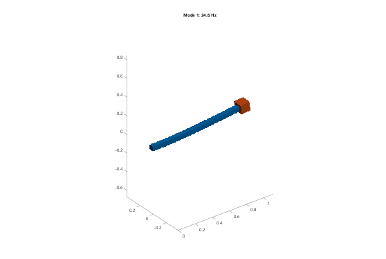

Contents
Tutorial 4 - Rigid bodies
Parts that are much stiffer than the rest of a structure (a link, a payload, a frame) can be modelled as rigid. A rigid body has a frame at its centre of mass that moves with 6 dofs; its geometry only provides its mass, inertia and surface. This tutorial covers:
- rigid bodies from a mesh, from an STL surface, or from mass properties
- a rigid tip mass on an elastic beam (tie, or coupling + joint)
- supporting rigid bodies, and the reference point
- mass properties from CAD (setMass)
addpath(fileparts(fileparts(mfilename('fullpath')))); out = fullfile(tempdir, 'fmbdTutorials'); if ~isfolder(out), mkdir(out); end fmbd.boxSTL(fullfile(out, 'beam.stl'), [0 0 0], [1000 50 50]); fmbd.boxSTL(fullfile(out, 'block.stl'), [1000 -25 -25], [1100 75 75]); steel = fmbd.material(210e9, 0.3, 7850); clamp = @(X) X(:,1) < 1e-6; m = 7850*0.1^3; % block mass
1. Three ways to make a rigid body
- fmbd.Body(file, mat, Rigid = true): meshed with Gmsh; a coarse Tet4 mesh is enough, the mass properties come out exact anyway.
- fmbd.Body.rigid(file, rho): the STL surface only (no Gmsh); mass, centre of mass and inertia are computed exactly from the closed surface. This is the easiest for complex CAD parts.
- fmbd.Body.pointMass(m, c, J): mass properties only, e.g. from a CAD report; it has no surface, so it is attached with a joint.
blockM = fmbd.Body(fullfile(out, 'block.stl'), struct('rho', 7850), Size = 50, Order = 1, ... Scale = 1e-3, Rigid = true, Name = 'block'); blockS = fmbd.Body.rigid(fullfile(out, 'block.stl'), 7850, Scale = 1e-3, Name = 'block'); [mM, cM, JM] = blockM.massProperties(); [mS, ~, JS] = blockS.massProperties(); fprintf('meshed: m = %.4f kg, Jxx = %.6f; surface: m = %.4f kg, Jxx = %.6f (exact %.4f, %.6f)\n', ... mM, JM(1,1), mS, JS(1,1), m, m*2*0.1^2/12);
meshed: m = 7.8500 kg, Jxx = 0.013083; surface: m = 7.8500 kg, Jxx = 0.013083 (exact 7.8500, 0.013083)
2. An elastic beam with a rigid tip mass
A tie between an elastic and a rigid body makes the tied nodes of the elastic body a coupling, fixed to the rigid body.
beam = @() fmbd.Body.elastic(fullfile(out, 'beam.stl'), steel, Size = 25, Scale = 1e-3, Name = 'beam'); s = fmbd.System(); s.add(beam()); s.add(blockS); s.tie('block', 'beam'); s.fix('beam', clamp); [f, V] = s.modes([], 4); % Estimate: cantilever with a point mass at the tip (Rayleigh, plus 0.24 of % the beam mass). The block's centre of mass lies 50 mm beyond the tip, and % the block has rotary inertia; both lower the FE value. EI = 210e9*0.05^4/12; mb = 7850*0.05^2; fprintf('f1: %.2f Hz, point-mass estimate %.2f Hz\n', f(1), sqrt(3*EI/(m + 0.24*mb))/(2*pi)); figure('Color', 'w'); s.plotMode([], V(:,1), Amplitude = 0.1, Title = sprintf('Mode 1: %.1f Hz', f(1)));
f1: 24.62 Hz, point-mass estimate 25.72 Hz

3. Supporting a rigid body
fix(body, dirs) holds a rigid body in the directions dirs (1:6 = [ux uy uz rx ry rz], world axes). Fixing only the rotations gives a guided end: the block can translate but not rotate.
s.fix('block', 4:6); fprintf('guided tip: f1 = %.2f Hz\n', s.modes([], 1));
guided tip: f1 = 46.72 Hz
4. The reference point
A rigid body is a reference point for joints, supports and signals; by default it is the centre of mass (Body.rigid) or the mesh centroid. RefPoint moves it, e.g. to a sensor or to where a load acts. The dynamics stay the same; the reference-point outputs change.
blockR = fmbd.Body.rigid(fullfile(out, 'block.stl'), 7850, Scale = 1e-3, Name = 'block', ... RefPoint = [1.1 0.025 0.025]); s = fmbd.System(); s.add(beam()); s.add(blockR); s.tie('block', 'beam'); s.fix('beam', clamp); fprintf('same frequencies with RefPoint at the far face: %d\n', norm(s.modes([], 4) - f)/norm(f) < 1e-8);
same frequencies with RefPoint at the far face: 1
5. Point masses
A point mass with the block's mass properties, attached by a fixed joint to a coupling on the beam's tip face. The coupling makes the face rigid, which the tie above also does, so the result is the same.
J = m*(2*0.1^2)/12*eye(3); % cube: Jxx = Jyy = Jzz s = fmbd.System(); s.add(beam()); s.add(fmbd.Body.pointMass(m, [1.05 0.025 0.025], J, Name = 'motor')); tipFace = s.couple('beam', @(X) X(:,1) > 1 - 1e-6); s.joint(tipFace, 'motor', 'fixed'); s.fix('beam', clamp); fprintf('point mass: f1 = %.2f Hz (block %.2f Hz)\n', s.modes([], 1), f(1));
point mass: f1 = 24.62 Hz (block 24.62 Hz)
6. Mass properties from CAD
setMass overrides the mass properties of a rigid body, e.g. with the values of a CAD mass-property report (which includes holes, inserts and other materials). The inertia can be given about another point and in other axes; LengthScale converts mm and kg mm^2.
cad = fmbd.Body.rigid(fullfile(out, 'block.stl'), 7850, Scale = 1e-3); cad.setMass(8.2, CenterOfMass = [1050 25 25], Inertia = [1.4e4 1.4e4 1.3e4], LengthScale = 1e-3); [mc, cc, Jc] = cad.massProperties(); fprintf('CAD values: m = %.2f kg, c = %s m, J = %s kg m^2\n', mc, mat2str(cc, 3), mat2str(diag(Jc)', 3));
CAD values: m = 8.20 kg, c = [1.05 0.025 0.025] m, J = [0.014 0.014 0.013] kg m^2